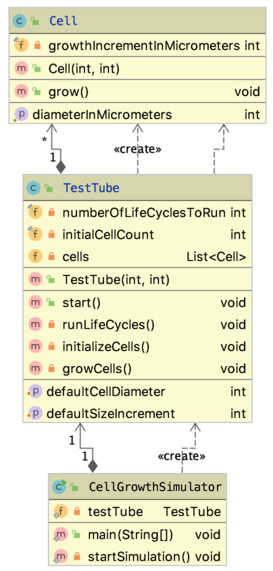
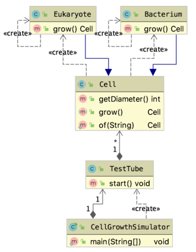

23. Inheritance (and a bit of UML)#
In this chapter, the concept of inheritance will be revisited and expanded. Since this is a good place for it, a visualization standard called UML (Unified Modelling Language) is also introduced.
23.1. The TestTube with cells#
Here is the TestTube at the end of this post Encapsulation). Instead of showing code, a UML diagram is displayed.

You can generate such a thing yourself in IntelliJ by selecting the source files you want to visualize → right-click → Diagrams → Show Diagram.
The diagram above shows everything: fields, methods, constructors, with any access level. Using the Diagrams menu (and general settings - see the doc) you can filter what you want to show. Here are the same classes with only the public fields shown, and no constructors:

So, what does this tell us? Class CellGrowthSimulator has a singular field of type TestTube and creates the instance itself. Class TestTube has 1 to many instances of Cell (held in a List<Cell>), and instantiates them itself. These HAS_A relations (class A has an instance of class B) are depicted with the arrow-with-diamond connector.
23.1.1. New specs: different types of cells#
So here comes your boss and tells you
“…but how about het difference between bacteria and eukaryotic cells??
They are of way different size and grow at different speeds.
I WANT TO GROW MANY TYPES OF CELLS IN MY TEST TUBE!!
And didn’t I tell you? They should be able to divide as well.”
You start thinking about the new specs.
When to divide?
Who controls division:
TestTube or the cell itself?
How does this relate to growing?
The different cell types is easy! Just give every type its own class
As an expert on the subject, you decide that the cells and not the test tube should know when to divide; in fact, they should be solely responsible for their size and increment (not the testtube). Division is depending on the cell size: when a certain size is reached, it is time to divide.
Here is the new design. Note that I simplified the names again and removed comments for conciseness’ sake.
23.1.2. class Bacterium#
package snippets.testtube3;
public class Bacterium {
private int diameter = 10;
private static final int growthIncrement = 1;
private static final int maximumDiameter = 30;
public int getDiameter() {
return diameter;
}
public Bacterium grow() {
this.diameter += growthIncrement;
if (this.diameter > maximumDiameter) {
return new Bacterium();
} else {
return null;
}
}
}
23.1.3. class Eukaryote#
package snippets.testtube3;
public class Eukaryote {
private int diameter = 20;
private static final int growthIncrement = 3;
private static final int maximumDiameter = 80;
public int getDiameter() {
return diameter;
}
public Eukaryote grow() {
this.diameter += growthIncrement;
if (this.diameter > maximumDiameter) {
return new Eukaryote();
} else {
return null;
}
}
}
See how similar it is to class Bacterium?
23.1.4. class TestTube#
package snippets.testtube3;
import java.util.ArrayList;
import java.util.List;
public class TestTube {
private final int numberOfLifeCyclesToRun;
private final int initialCellCount;
private final String cellType;
private List<Bacterium> bacteria = new ArrayList<>();
private List<Eukaryote> eukaryotes = new ArrayList<>();
public TestTube (int numberOfLifeCyclesToRun, int initialCellCount, String cellType) {
//check code omitted
this.numberOfLifeCyclesToRun = numberOfLifeCyclesToRun;
this.initialCellCount = initialCellCount;
this.cellType = cellType;
}
public void start() {
initializeCells();
runLifeCycles();
}
private void runLifeCycles() {
for (int i = 0; i < this.numberOfLifeCyclesToRun; i++) {
growCells();
}
}
private void initializeCells() {
for (int i = 0; i < this.initialCellCount; i++) {
if (this.cellType.equals("Bacteria")) {
bacteria.add(new Bacterium());
}
else if (this.cellType.equals("Eukarya")) {
eukaryotes.add(new Eukaryote());
}
//room for more cell types
}
}
private void growCells() {
if (this.cellType.equals("Bacteria")) {
for (Bacterium bacterium : this.bacteria) {
bacterium.grow();
}
}
else if (this.cellType.equals("Eukarya")) {
for (Eukaryote eukaryote : this.eukaryotes) {
eukaryote.grow();
}
}
//room for more cell types
}
}
See how much duplicated code there is in class TestTube, and repeated use of same if/else blocks?
Here is the UML of this situation (private fields included). It shows the duplication clearly as well.

Repeated code and similar if/else algorithm logic are typical signs of smelly code that can be solved using some Object Oriented design techniques, in this case inheritance.
23.2. Apply inheritance to model what is common#
Inheritance can be used when there is a IS-A relationship: when it can be said that class A IS-A class B. For example, Apple IS-A Fruit and Pear IS-A Fruit (but not Pear IS-A Apple!). In this case, the IS-A relation ship can be defined as “Bacterium IS-A Cell” and “Eukaryote IS-A Cell”.
Once this prerequisite for inheritance is established, the common superclass should be created and all common code from the subclasses moved to it.
Class Cell can clearly hold the diameter, the growthIncrement and the maximumDiameter fields, even though they will be different between the subclasses. Class Cell can also publish the growCells() method, even though they will be implemented differently in the subclasses. Key here is that all subclasses will be able to grow. When you know the functionality should be there, but don’t know how, your should make it abstract. As a consequence, your class needs to be abstract as well. Let’s review this with class Cell.
package snippets.testtube3;
public abstract class Cell {
//no decent defaults possible at level of class Cell,
//but we know this field is relevant
private int diameter;
public Cell(int initialDiameter) {
this.diameter = initialDiameter;
}
public int getDiameter() {
return diameter;
}
protected void setDiameter(int newDiameter) {
this.diameter = newDiameter;
}
public abstract Cell grow();
}
Note that both the class declaration and the method grow() have been marked abstract.
Being abstract
An abstract method has no method body, only a signature the same as with interfaces.
An abstract class cannot be instantiated.
Therefore, this statement Cell cell = new Cell(12) will not compile because Cell is now abstract.
The next step is declaring your subclasses to extend the superclass (only Bacterium shown here):
package snippets.testtube3;
public class Bacterium extends Cell{
private static int bacterialInitialDiameter = 10;
private static final int growthIncrement = 1;
private static final int maximumDiameter = 30;
public Bacterium() {
super(bacterialInitialDiameter);
}
@Override
public Cell grow() {
setDiameter(getDiameter() + growthIncrement);
if (getDiameter() > maximumDiameter) {
return new Bacterium();
} else {
return null;
}
}
}
Class Bacterium is required to implement a constructor serving an initial size to the class Cell constructor. It has no diameter property anymore, and no getter for it. It has implemented the grow() method, and because of that is is not abstract and can be instantiated. Note that, although the method signature is public Cell grow(), it returns a Bacterium instance. This is a typical example of polymorphism.
You may notice that the static variables growthIncrement and maximumDiameter will be specified in all subclasses and could be specified once (in class Cell). This is true, and several solutions exist for static fields, but focus here lies on different aspects.
You may also notice there is not much won with respect to amount of code. That is correct, but in this case the improvement lies in class TestTube:
package snippets.testtube3;
import java.util.ArrayList;
import java.util.List;
public class TestTube {
private final int numberOfLifeCyclesToRun;
private final int initialCellCount;
private final String cellType;
private List<Cell> cells = new ArrayList<>();
/**
* Constructs with the two essential parameters
* @param numberOfLifeCyclesToRun a number between 1 and 100
* @param initialCellCount a number between 1 and 1000
* @param cellType the cell type ["
* @return testtube a TestTube instance
*/
public TestTube (int numberOfLifeCyclesToRun, int initialCellCount, String cellType) {
//check code omitted
this.numberOfLifeCyclesToRun = numberOfLifeCyclesToRun;
this.initialCellCount = initialCellCount;
this.cellType = cellType;
}
/**
* starts the growth process
*/
public void start() {
initializeCells();
runLifeCycles();
}
private void runLifeCycles() {
for (int i = 1; i <= this.numberOfLifeCyclesToRun; i++) {
growCells();
if (i % 10 == 0) System.out.println("Grow cycle " + i + " finished; " + cells.size() + " cells present");
}
}
private void initializeCells() {
for (int i = 0; i < this.initialCellCount; i++) {
if (this.cellType.equals("Bacteria")) {
cells.add(new Bacterium());
}
else if (this.cellType.equals("Eukarya")) {
cells.add(new Eukaryote());
} else {
throw new IllegalArgumentException("Unknown cell type: " + cellType);
}
//room for more cell types - yes this can be improved as well
}
}
private void growCells() {
//I have no clue what is growing here and don't care
//enhanced for loop will cause a ConcurrentModificationException
for (int i = 0; i < cells.size(); i++) {
Cell cell = cells.get(i);
Cell child = cell.grow();
if (child != null) cells.add(child);
}
}
}
You can see the cell growing logic has been completely decoupled from the actual cells that are being grown. Both grow() methods in the subclasses have specific signatures with respect to the return type (Bacterium, Eukaryote), but still adhere to the superclass contract (otherwise @Override would have instigated a compiler error).
For completeness, here is the simulator class, and some output:
package snippets.testtube3;
public class CellGrowthSimulator {
private static TestTube testTube;
public static void main(String[] args) {
startSimulation();
}
private static void startSimulation() {
testTube = new TestTube(100,5, "Bacteria");
testTube.start();
}
}
outputs
Grow cycle 10 finished; 5 cells present Grow cycle 20 finished; 5 cells present Grow cycle 30 finished; 55 cells present Grow cycle 40 finished; 105 cells present Grow cycle 50 finished; 430 cells present Grow cycle 60 finished; 1255 cells present Grow cycle 70 finished; 3680 cells present Grow cycle 80 finished; 12105 cells present Grow cycle 90 finished; 35105 cells present Grow cycle 100 finished; 111230 cells present
Finally, there is some logic that should be moved for good design. The Cell creation logic should be put in a static factory method inside class Cell to abstract away the cell creation logic and put it in one place for the entire application:
public static Cell of(String type) {
switch (type) {
case "Bacteria": return new Bacterium();
case "Eukarya": return new Eukaryote();
default: throw new IllegalArgumentException("Unknown cell type: " + type);
}
}
and class `TestTube becomes even less aware of whet is being grown:
private void initializeCells() {
for (int i = 0; i < this.initialCellCount; i++) {
cells.add(Cell.of(cellType));
}
}
Here is the final UML.

This also shows that actual cell types are hidden behind the abstract Cell class. The subtype constructors could even have been marked protected or <default> to emphasize this.
This is the power of polymorphism implemented with inheritance!
Polymorphism allows one type to express some sort of contract, and for other types to implement that contract (often through class inheritance) in different ways. Code using that contract should not have to care about which implementation is involved, only that the contract is obeyed.
23.2.1. Use a type cast when you need the specific type#
You have seen it is often best to code against generic types, like in this block:
private void growCells() {
for (int i = 0; i < cells.size(); i++) {
Cell cell = cells.get(i);
Cell child = cell.grow();
if (child != null) cells.add(child);
}
}
But what if you have the need for specific functionality? For instance, you have a WhiteBloodCell which can also eatOtherCell(Cell cell):
package snippets.testtube3;
public class WhiteBloodCell extends Eukaryote {
public WhiteBloodCell() {
super();
}
public void eatOtherCell(Cell cell) {
System.out.println("White blood cell, eating other cell");
//cell eating logic
}
}
Note that this class extends Eukaryote and thereby inherits the grow() method. Now if you want to do something specifically white-blood-cellish, perform a type-test-and-cast:
private void growCells() {
for (int i = 0; i < cells.size(); i++) {
Cell cell = cells.get(i);
Cell child = cell.grow();
if (child != null) cells.add(child);
//test and cast
if (cell instanceof WhiteBloodCell) {
WhiteBloodCell wbc = (WhiteBloodCell)cell;
wbc.eatOtherCell(child);
}
}
}
Note
Objects never change type, only the reference to them may change.